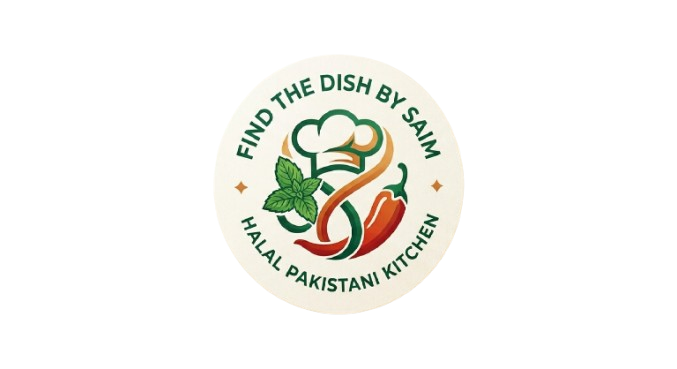

Find the Dish by Saim
Halal Pakistani recipe finder
Pick ingredients from a clean halal library, then get precise recipes with step-by-step cooking instructions and useful video guides.
After selecting ingredients, click the button above to discover easy-to-follow dishes.